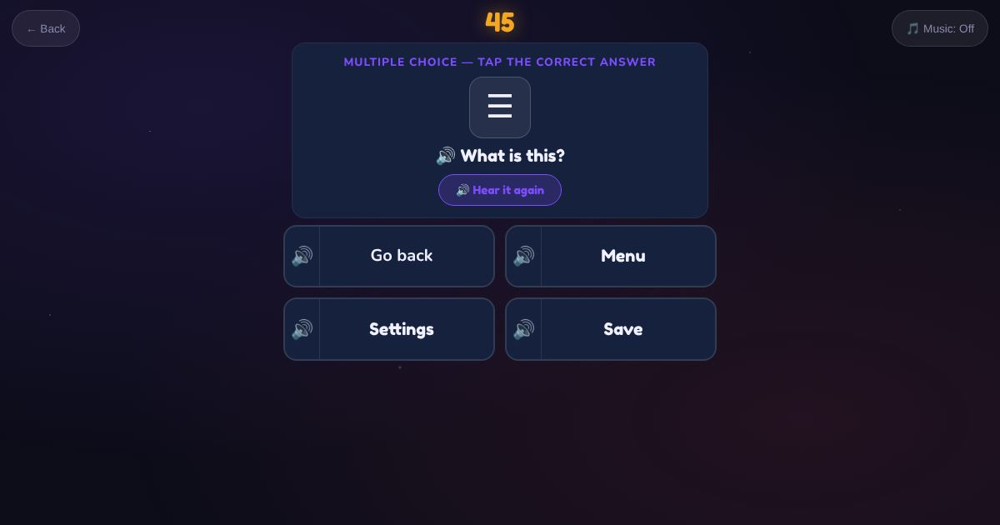

For teachers and tutors
About Screen Symbols
The icons on phones, computers and kiosks: search, home, go back, play, pause, sound on, sound off, internet, battery, settings, delete, save, camera, message and menu. The learner sees the icon and taps its name.

How to play
- Look at the symbol.
- Listen to the question.
- Tap its name.
Play it as a class
Choose Screen Symbols in the Teacher Game, then find the same icons on students' own phones.